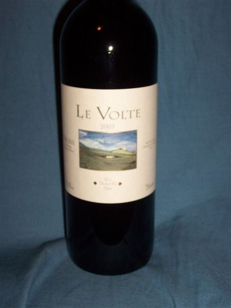

Le Volte dell'Ornellaia
Il rosso più accessibile della Tenuta dell’Ornellaia, che unisce Merlot, Sangiovese e Cabernet Sauvignon in uno stile fruttato.

Le Volte dell’Ornellaia è il vino d’ingresso della tenuta di Bolgheri, pensato come un rosso da godere senza attese, che rifletta il carattere della costa toscana.
A differenza degli altri vini della casa, unisce le varietà bordolesi al Sangiovese, l’uva tradizionale della Toscana: Merlot, Sangiovese e Cabernet Sauvignon, in proporzioni che variano ogni anno. Per questo è un IGT Toscana e non un Bolgheri DOC.
Le varietà vengono vinificate separatamente in acciaio e il vino affina alcuni mesi in legno, in parte in barrique già usate, così che il legno resti in secondo piano. È un rosso fruttato, morbido e versatile a tavola.
Profilo di degustazione
Rubino brillante. Profumi di ciliegia, prugna e frutti rossi, con un tocco di erbe mediterranee e spezie. In bocca è morbido, di medio corpo, con finale fresco.
Abbinamenti
Pasta, pizza, hamburger, carni alla griglia, formaggi freschi
Servizio
15-17 °C, calice medio